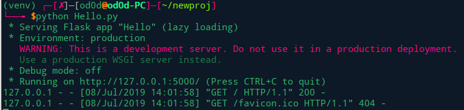

Flask框架学习笔记
前言
最近大大小小比赛都会出现基于Flask框架的题目，花一下午过一下基础.
背景
什么是flask
Flask是一个用Python编写的Web应用程序框架。 它由 Armin Ronacher 开发，他领导一个名为Pocco的国际Python爱好者团队。 Flask基于Werkzeug WSGI工具包和Jinja2模板引擎。两者都是Pocco项目。
WSGI
Web Server Gateway Interface（Web服务器网关接口，WSGI）已被用作Python Web应用程序开发的标准。 WSGI是Web服务器和Web应用程序之间通用接口的规范。
Werkzeug
它是一个WSGI工具包，它实现了请求，响应对象和实用函数。 这使得能够在其上构建web框架。 Flask框架使用Werkzeug作为其基础之一。
jinjia2
jinja2是Python的一个流行的模板引擎。Web模板系统将模板与特定数据源组合以呈现动态网页。
Flask通常被称为微框架。 它旨在保持应用程序的核心简单且可扩展。Flask没有用于数据库处理的内置抽象层，也没有形成验证支持。相反，Flask支持扩展以向应用程序添加此类功能。
# 开发环境virtualenv
- 安装virtualenv
pip install virtualenv - 创建虚拟环境
mkdir newproj cd newproj virtualenv venv ```shell 3. 激活虚拟环境 ```shell source venv/bin/activate - 在虚拟环境安装flask
pip install Flask

二、Flask应用
测试Flask安装
from flask import Flask
app = Flask(__name__)
@app.route('/')
def hello_world():
return 'Hello World’
if __name__ == '__main__':
app.run()参考链接：https://foofish.net/python-decorator.html
1.Flask构造函数使用当前模块(name)名称作为参数
2.route()函数是一个装饰器，它告诉应用程序哪个URL应该调用相关的函数app.route(rule, options)rule参数表示与该函数的URL绑定options是要转发给举出Rule对象的参数列表
３. Flask类的run()方法在本地开发服务器上运行应用程序app.run(host, port, debug, options)
if __name__ == '__main__'的意思是：当.py文件被直接运行时，if __name__ == '__main__'之下的代码块将被运行；当.py文件以模块形式被导入时，if __name__ == '__main__'之下的代码块不被运行。
三、Flask路由
现代Web框架使用路由技术来帮助用户记住程序URL。Flask的route()装饰器用于将URL绑定到函数
@app.route(‘/hello’)
def hello_world():
return ‘hello world’将URL'/hello'规则绑定到hello_world()函数.访问http://localhost:5000/hello，会将hello_world()函数输出在浏览器
另一种规则绑定add_url_rule()函数（少了route()函数的语法糖）
def hello_world():
return ‘hello world’
app.add_url_rule(‘/’, ‘hello’, hello_world)四、Flask变量规则
通过向规则参数添加变量部分，可以动态构建URL。变量标记<variable-name>,最为参数传递到与规则相关联的函数。
from flask import Flask
app = Flask(__name__)
@app.route('/hello/<name>')
def hello_name(name):
return 'Hello %s!' % name
if __name__ == '__main__':
app.run(debug = True)URL: http://127.0.0.1:5000/hello/od0d，其中od0d作为参数传入关联函数中。
转换器构建规则
- int 接受整数
- float 接受浮点值
- path 接受用作目录分隔符的斜杠
from flask import Flask
app = Flask(__name__)
@app.route('/blog/<int:postID>')
def show_blog(postID):
return 'Blog Number %d' % postID
@app.route('/rev/<float:revNo>')
def revision(revNo):
return 'Revision Number %f' % revNo
if __name__ == '__main__':
app.run()URL:http://localhost:5000/blog/11
Blog Number 11URL:http://localhost:5000/rev/1.1
Revision Number 1.100000Flask的URL规则基于Werkzeug的路由模块。这确保形成的URL是唯一的，并且基于Apache规定的先例。
app.route('/flask')
app.route('/python/')第一个访问/flask/会显示404
第二个访问/python与/python/均可
五、Flask URL构建
url_for()函数动态构建特定函数的URL。第一个参数为接收函数名称作为第一个参数，而后的一个或多个参数作为URL变量部分
from flask import Flask, redirect, url_for
app = Flask(__name__)
@app.route('/admin')
def hello_admin():
return 'Hello Admin'
@app.route('/<guest>/')
def hello_guest(guest):
return 'Hello %s as Guest' % guest
@app.route('/user/<name>')
def hello_user(name):
if name =='admin':
return redirect(url_for('hello_admin'))
else:
return redirect(url_for('hello_guest',guest = name))
if __name__ == '__main__':
app.run(debug = True)URL:http://127.0.0.1:5000/user/admin =>http://127.0.0.1:5000/admin
Hello AdminURL:http://127.0.0.1:5000/user/od0d => http://127.0.0.1:5000/guest/
Hello od0d as Guest六、Flask HTTP方法
默认情况下，Flask路由响应GET请求,但可以在route()修饰器中添加其他方法参数GET、HEAD、POST、PUT、DELETE
创建html表单
<html>
<body>
<form action = "http://localhost:5000/login" method = "post">
<p>Enter Name:</p>
<p><input type = "text" name = "nm" /></p>
<p><input type = "submit" value = "submit" /></p>
</form>
</body>
</html>创建接收响应py脚本
from flask import Flask, redirect, url_for, request
app = Flask(__name__)
@app.route('/success/<name>')
def success(name):
return 'welcome %s' % name
@app.route('/login',methods = ['POST', 'GET'])
def login():
if request.method == 'POST':
user = request.form['nm']
return redirect(url_for('success',name = user))
else:
user = request.args.get('nm')
return redirect(url_for('success',name = user))
if __name__ == '__main__':
app.run(debug = True)POST请求处理:user=request.form['nm'] (od0d)
welcome od0d
GET请求处理:User = request.args.get(‘nm’)
/login?nm=od0d
welcome od0d
七、Flask 模板
利用Flask所基于的Jinja2模板引擎的地方。而不是从函数返回硬编码HTML，可以通过render_template()函数呈现HTML文件。
Web模板包含用于变量和表达式（在这些情况下为Python表达式）的HTML语法散布占位符，这些是在呈现模板时替换的值。
在项目中创建文件夹templates新建文件hello.html
<!doctype html>
<h1>Hello {{ name }}!</h1>python shell脚本
from flask import Flask, render_template
app = Flask(name)
@app.route('/hello/<user>')
def hello_name(user):
return render_template('hello.html', name = user)
if name == 'main':
app.run(debug = True)Jinja2模板引擎使用以下分隔符从HTML转义。
{% ... %}用于语句
{{ ... }}用于表达式可以打印到模板输出
{# ... #}用于未包含在模板输出中的注释
# ... ##用于行语句模板DEMO
<!doctype html>
<table border = 1>
{% for key, value in result.iteritems() %}
<tr>
<th> {{ key }} </th>
<td> {{ value }} </td>
</tr>
{% endfor %}
</table>八、Flask静态文件
模板引入javascript和css文件。通常将这些文件默认保存在/static下
/demo_index.py
from flask import Flask, render_template
app = Flask(__name__)
@app.route("/")
def index():
return render_template("index.html")
if __name__ == '__main__':
app.run(debug = True)/templates/index.html
<html>
<head>
<script type = "text/javascript"
src = "{{ url_for('static', filename = 'hello.js') }}" ></script>
</head>
<body>
<input type = "button" onclick = "sayHello()" value = "Say Hello" />
</body>
</html>/static/hello.js
function sayHello() {
alert("Hello World")
}目录结构
├── demo_index.py
├── static
│ └── hello.js
├── templates
│ ├── hello.html
│ └── index.html九、Flask Request对象
Request对象属性
Form - 它是一个字典对象，包含表单参数及其值的键和值对。
args - 解析查询字符串的内容，它是问号（？）之后的URL的一部分。
Cookies - 保存Cookie名称和值的字典对象。
files - 与上传文件有关的数据。
method - 当前请求方法。
参考链接
本博客所有文章除特别声明外，均采用 CC BY-SA 4.0 协议 ，转载请注明出处！